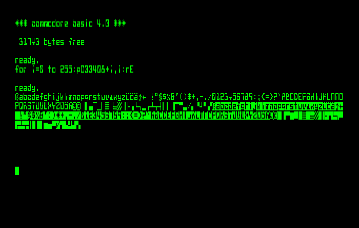
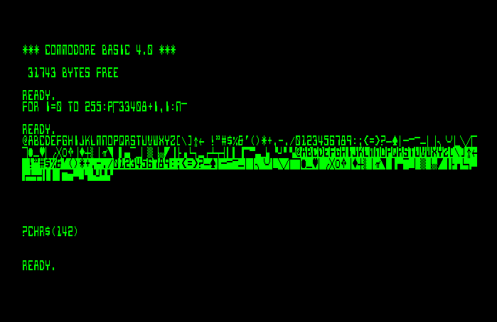

A creatively modified 8032-SK
(C) 2011- André Fachat
In spring 2011 I got a new addition to my collection - an 8032-SK. First I thought that would be a standard PET, but then I found that some ROMs were replaced by EPROMs.
Reading out the ROMs revealed a surprise. This PET has some "standard" and some non-standard extensions. As a kind of standard extension I found the ExBasic Level II ROMs sitting in the $9000 and $a000 sockets.
But the non-standard extensions were much more interesting. Read about them below.
Table of content
The Editor ROM was modified in a very custom way. Here is the diff to a standard editor ROM (901474-04):
--- SKEdit.hex 2011-04-23 11:55:02.940016645 +0200 +++ edit-4-80-b-50Hz.901474-04.bin.hex 2011-04-23 11:55:57.572011967 +0200 -73,7 +73,7 00000480 f0 8d 10 e8 ad 10 e8 0a 0a 0a 10 09 84 f9 ad 13 |................| 00000490 e8 09 08 d0 09 a5 f9 d0 08 ad 13 e8 29 f7 8d 13 |............)...| 000004a0 e8 90 09 84 fa ad 40 e8 09 10 d0 09 a5 fa d0 08 |......@.........| -000004b0 a5 40 e8 29 ef 8d 40 e8 20 be e4 4c 00 e6 a0 ff |.@.)..@. ..L....| +000004b0 ad 40 e8 29 ef 8d 40 e8 20 be e4 4c 00 e6 a0 ff |.@.)..@. ..L....| 000004c0 84 a6 c8 84 98 a5 e4 29 7f 85 e4 a2 50 a0 08 ad |.......)....P...| 000004d0 12 e8 cd 12 e8 d0 f6 4a b0 1f 48 bd d0 e6 d0 06 |.......J..H.....| 000004e0 a9 01 85 98 d0 12 c9 10 d0 08 a5 e4 09 80 85 e4 |................| -84,7 +84,7 00000530 d0 3d c6 e5 d0 39 a2 04 86 e5 a6 9e ca 10 30 85 |.=...9........0.| 00000540 97 c9 ff f0 2a aa 08 29 7f 28 30 17 46 98 90 13 |....*..).(0.F...| 00000550 c9 2c 90 0d c9 3c b0 09 e9 0f c9 20 b0 05 69 20 |.,...<..... ..i | -00000560 2c 09 80 a6 9e e4 e3 b0 06 9d 6f 02 4c 90 e7 60 |,.........o.L..`| +00000560 2c 09 80 a6 9e e4 e3 b0 06 9d 6f 02 e8 86 9e 60 |,.........o....`| 00000570 a5 c6 29 f8 8d 3a 03 4a 4a 4a aa a9 01 8d 3e 03 |..)..:.JJJ....>.| 00000580 a4 c6 cc 3a 03 f0 09 0e 3e 03 ee 3a 03 4c 82 e5 |...:....>..:.L..| 00000590 60 c9 19 d0 06 20 e8 e3 4c d9 e5 c9 0f d0 0b a5 |`.... ..L.......| -107,21 +107,18 000006a0 c9 20 90 2c 20 a7 e6 a4 e7 f0 25 a9 10 8d 4b e8 |. ., .....%...K.| 000006b0 a9 0f 8d 4a e8 a2 07 bd 4d e7 8d 48 e8 a5 e7 88 |...J....M..H....| 000006c0 d0 fd 38 e9 01 d0 f8 ca d0 ed 8e 4a e8 8e 4b e8 |..8........J..K.| -000006d0 60 16 04 40 03 39 36 33 5f b1 2f 15 13 4d 20 58 |`..@.963_./..M X| -000006e0 12 b2 10 0f b0 2c 4e 56 59 b3 00 19 ae 2e 42 43 |.....,NVY.....BC| -000006f0 00 b4 5b 4f 11 55 54 45 51 14 50 49 3a 5a 52 57 |..[O.UTEQ.PI:ZRW| -00000700 09 b6 5d 4c 0d 4a 47 44 41 b5 5c 4b 3b 48 46 53 |..]L.JGDA.\K;HFS| -00000710 9b b9 06 5e b7 b0 37 34 31 05 0e 1d b8 2d 38 35 |...^..741....-85| -00000720 32 4c cf 0d 52 55 4e 20 20 0d 31 28 29 0f 27 00 |2L..RUN .1().'.| -00000730 19 20 00 09 00 00 10 00 00 00 00 00 31 28 29 0f |. ..........1().| -00000740 31 00 19 25 00 07 00 00 10 00 00 00 00 00 0e 1e |1..%............| +000006d0 60 16 04 3a 03 39 36 33 df b1 2f 15 13 4d 20 58 |`..:.963../..M X| +000006e0 12 b2 10 0f b0 2c 4e 56 5a b3 00 19 ae 2e 42 43 |.....,NVZ.....BC| +000006f0 00 b4 db 4f 11 55 54 45 51 14 50 49 dc 59 52 57 |...O.UTEQ.PI.YRW| +00000700 09 b6 c0 4c 0d 4a 47 44 41 b5 3b 4b dd 48 46 53 |...L.JGDA.;K.HFS| +00000710 9b b9 06 de b7 b0 37 34 31 05 0e 1d b8 2d 38 35 |......741....-85| +00000720 32 44 cc 22 2a 0d 52 55 4e 0d 32 28 28 08 26 02 |2D."*.RUN.2((.&.| +00000730 19 20 00 09 00 00 10 00 00 00 00 00 32 28 28 08 |. ..........2((.| +00000740 30 00 19 25 00 07 00 00 10 00 00 00 00 00 0e 1e |0..%............| 00000750 3e 7e 3e 1e 0e 00 50 a0 f0 40 90 e0 30 80 d0 20 |>~>...P..@..0.. | 00000760 70 c0 10 60 b0 00 50 a0 f0 40 90 e0 30 80 80 80 |p..`..P..@..0...| 00000770 80 80 81 81 81 82 82 82 83 83 83 84 84 84 85 85 |................| -00000780 85 85 86 86 86 87 87 bf aa aa aa aa aa aa aa aa |................| -00000790 c9 84 d0 14 a9 0c 8d 80 e8 a5 c1 29 30 09 10 49 |...........)0..I| -000007a0 20 8d 81 e8 85 c1 d0 11 c9 86 d0 0a 86 9e a9 0e | ...............| -000007b0 20 d2 ff 18 90 03 e8 86 9e 60 aa aa aa aa aa aa | ........`......| -000007c0 aa aa aa aa aa aa aa aa aa aa aa aa aa aa aa aa |................| +00000780 85 85 86 86 86 87 87 cd aa aa aa aa aa aa aa aa |................| +00000790 aa aa aa aa aa aa aa aa aa aa aa aa aa aa aa aa |................| * 00000800
The diff contains different parts:
EPROM defect?
The diff at $e4b0 changes the opcode from $AD to $A5 -
this means a LDA abs becomes an LDA zp
followed by a INX. Looking at the ROM listing,
I can't seem to make a sense of that. It seems this is an
EPROM defect, although a stable one (it did not change through
multiple reads).
Key Code Triggers
The diff at $e56c inserts a JMP to $e790. The routine there checks if the key code given is $84, in which case it manipulates the register 12 of the CRTC (see below), or if the key code is $86, it "prints" a $0e character - switching to lower character mode (as opposed to graphics mode)
It is interesting to see how this routine is triggered, as the key codes $84 and $86 do not actually exist in the keyboard mapping table!
Looking closer and comparing with the business keyboard decoding table (see also the Petindex keyboards page), you can see that these keys are reachable similar to the "^V" or "^Y" codes, by pressing three keys:
$04 -> "3" + "x" + "/" $06 -> "shift left" + "shift right" + "1"
Adding a shift key (automatic for $06, but necessary for $04) then results in $84 resp. $86 key codes! So you have to press three ($86) resp. 4 keys ($84) to trigger one of these codes.
Keyboard tables
The changes from $e6d1 to $e720 are changes in the keyboard decoding tables, where some keys have been mapped around in a, let's say, non-standard way. If you're not used to them, you get some problems.
Run key
At $e721 there is a change in the character sequence for the RUN key. Interestingly it changes it back from the BASIC 4
dL"* run
to the older version with the tape load:
lO"* run
Screen Geometry
Finally the changes at $e72a are modifications in the CRTC register settings for the graphics and lower case modes.
The other surprise was the character generator ROM. The first impression showed that there were at least German umlauts. But when I found the keyboard code trigger I had a good laugh.
Modified Character Set
Once I found the trigger I found what it did: it switched the character set.
|  |  |
{kind=link}
{kind=link}
As you can see the character set mimics what then was thought of being a "computer readable" character set. Looking at this today makes you smile :-)
Note that there are German umlauts, paragraph and "sharp s" (ß ), although in non-standard places, at least compared to the standard German (CBM 8296) character generator ROM.
Please also note the "smiley" and the "copyright" symbols!
This change also is in the "standard" upper/lower case character generator:
{kind=link}
How the trigger works
The trigger uses a lesser-known feature of the PET video graphics system. The CRTC chip has 14 address lines, capable of addressing 16k of video RAM. Only 4k are used in the PET. So the upper lines can be used for other purposes. The 8032 models actually use video address lines 12 and 13. TA12 is used to invert the video output - unfortunately _after_ it has been blanked for the retrace, which means you cannot use it to quickly invert the screen for effects.
TA13 actually is connected to the /CS2 chips select signal of the character ROM. This line is active low, so if the CRTC address is set in the lower half, that's fine and this is done in the editor ROM. If you would program this line high, the ROM chip would not be selected, and no output would occur.
Now if you look closer, you can see that the ROM chip is labeled as "2316 or 2332". Which means you can use either a 2k or a 4k ROM. If we do the math we find that a character set visible at any one time has 128*8=1024 byte, i.e. 1k. Adding the graphics vs. lower/upper case mode results in a normal character set ROM being 2k. And the ROM chips has 11 address bits, A0-A10, which can address 2k, which fits this.
But how does the 4k ROM fit in here? There is no address line for it, but it still works! If you look at the 2316 and 2332 datasheets, you may notice that the 2332 has one select line less than the 2316, to make way for an additional address line A11. And, by chance(? ;-) this is /CS2, which is connected to TA13 in the PET.
This means that if you use a 4k character ROM, you can switch between the two 2k character sets by programming the video RAM address in the CRTC appropriately. And this is exactly what the trigger code in the editor ROM shown above does. By pressing left-shift, "3", "x", and "/" at the same time, you can toggle between the normal and the "computer" character set.
Return to Homepage
Last modified: 2013-11-02